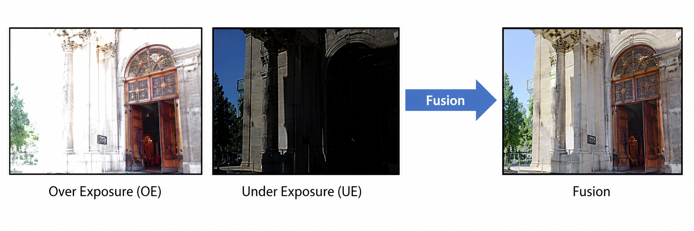

Decouple luminance range integration and structural detail fusion.
ECCV 2026
LIIFusion: Coarse-to-fine Framework for Generative MEF via Implicit Neural Representation
1Yonsei University 2LG Electronics

Abstract
Multi-exposure fusion (MEF) expands the luminance range beyond what a single exposure can capture. Combining images taken at different exposure levels requires handling geometric differences while naturally merging their complementary brightness information. It often demands generative completion where details are missing. Diffusion-based generative methods address these challenges; however, they are computationally expensive and struggle to preserve fine structures in saturated regions. We propose LIIFusion, a coarse-to-fine framework that balances fusion quality and efficiency in generative MEF. The coarse stage performs low-resolution generative fusion, enhanced by adaptive exposure correction. The fine stage adapts a local implicit image function into a multi-exposure fusion function conditioned on high-resolution OE/UE sources and the coarse output.
What is Generative MEF?
When you take a photo, a camera can capture multiple frames at different exposures and integrate them to produce a visually pleasing image. This process is called multi-exposure fusion (MEF).
Conventional MEF aligns and blends information observed across differently exposed images. Under severe saturation, large motion, or occlusion, however, some scene content has no reliable correspondence.
Generative MEF uses a generative prior to synthesize such missing content instead of relying only on deterministic blending. Existing diffusion-based methods achieve strong fusion quality, but high-resolution inference requires expensive patch-wise sampling.

Main contributions
Reformulate LIIF from a super-resolution decoder into a multi-exposure conditional fusion function.
Achieve up to 3.7× faster inference than prior generative MEF while attaining state-of-the-art fusion quality.
Method

Adaptive Exposure Correction (AEC)
AEC attenuates severely over-exposed regions before fidelity guidance.
LLRdiff
= clip(
LLRoe
−
LLRue,
0, 1 )
W =
(1 − α · LLRdiff)1/2.2
I′LRoe
=
ILRoe ⊙ W
The corrected OE image is used for fidelity guidance to enhance fusion quality at low resolution.
INR-based Fine Stage
Multi-resolution inputs—the low-resolution fused image and the high-resolution exposure images—are fused in a continuous feature domain using INR.
s = fθ(
[zcoarse, zfine],
[x, c])
Querying all target coordinates produces the final high-resolution fused image.
Qualitative Results


Quantitative Results
| Model | RealHDRV (50 scenes) | UltraFusion Benchmark (100 scenes) | ||||||||
|---|---|---|---|---|---|---|---|---|---|---|
| MUSIQ ↑ | DeQA ↑ | PAQ2PIQ ↑ | HyperIQA ↑ | Time ↓ | MUSIQ ↑ | DeQA ↑ | PAQ2PIQ ↑ | HyperIQA ↑ | Time ↓ | |
| Defusion | 56.38 | 3.2867 | 68.31 | 0.4838 | 2 min | 60.11 | 3.3529 | 71.83 | 0.5440 | 6 min |
| MEF-LUT | 62.42 | 3.2864 | 70.04 | 0.5020 | 4 sec | 64.06 | 3.2859 | 71.80 | 0.5103 | 8 sec |
| HSDS-MEF | 61.82 | 3.6045 | 71.14 | 0.5055 | 18 min | 65.23 | 3.6662 | 73.77 | 0.5786 | 46 min |
| UltraFusion | 67.54 | 3.8998 | 73.39 | 0.5834 | 101 min | 68.40 | 4.0123 | 75.18 | 0.6214 | 203 min |
| LIIFusion (Ours) | 69.52 | 3.8908 | 74.06 | 0.6175 | 27 min | 70.19 | 3.9807 | 75.59 | 0.6467 | 59 min |
User Study
Best-choice rate
Average rank
Participants
| Model | Best-choice rate ↑ | Avg. rank ↓ | Time ↓ |
|---|---|---|---|
| MEF-LUT | 3.79% | 3.57 | 0.5 sec |
| HSDS-MEF | 13.64% | 2.89 | 2 min 27 sec |
| UltraFusion | 21.21% | 2.02 | 12 min 9 sec |
| LIIFusion (Ours) | 61.36% | 1.52 | 3 min 23 sec |